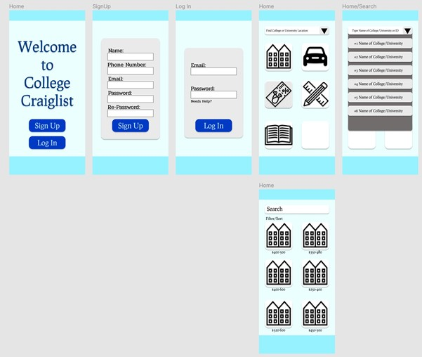

Hybrid App
1.0 Design Documents
1.1 Purpose
I am developing an application using Flutter Development for IOS and Android versions. My proposal is College Craigslist for students only. The College Craigslist is when students are looking for cheaper textbooks, college supplies, or places like apartments. The students (users) will be able to view pictures, prices, locations, and contact information. So I am going to create an application for college/university and I am hoping that this application will be useful to users.1.2 App Category
The app would fit for college students who are looking for roommates, dorm, apartment, used books, and other supplies.1.3 Project Description
The app will do buy, sell, and trade like a Craigslist website. The incoming students who are looking for a cheaper apartment, cheaper books, and so on. The students who are on low budgets, it is great for them to buy cheaper or trade to save money. They can search on the app using the filter to find their preferences - type of apartment, type of books, and other things.1.4 Goals
I am hoping that the app would be successful for the users depending on their budgets if they are looking for cheap things. For example, the textbook costs over a hundred dollar at the store and the user downloads this app to see if someone has the same textbook but used - can be under a hundred dollar. Another example, if a student has a roommate but he/she is graduating soon so the student is looking for a new roommate to sublet.1.5 Timeline
Since we have a few weeks until the final deadline, I would work on it as soon as possible and let it evaluate by my roommates and friends to see if they like it or not. This would be a bit more work even if this is a simple proposal.2.0 Development Process
2.1 Details
I mentioned Flutter Developments in the introduction, so I will be working on the project using Flutter – for both IOS and Android emulators. Before that, I created sketches and they are not complicated because developing an application in less than four weeks is a very difficult task. So, I am going to make the applications simpler. Flutter’s documentations are sometimes not clear, so the application will be quite long to develop.2.2 Sketches
The Home Page is always a start when opening an application so students can have two options – log in an account if their account has existed and sign up if they are new to the application. The login and Sign-Up pages’ layout are simple, after they log in or create an account, they will automatically access a Craigslist page. There is a college/university search bar at the top, the students can search their college/university names or ID. After they found their college/university, the Craigslist will become available and allow a user to tap whenever they need. The user taps an apartment icon, it will access to an apartment page and there is a filter/sort that allows finding the right apartment for the user. The colour scheme is a value of blue, from darker to light. Because the blue colour is like writing with a blue pen in a professional way.